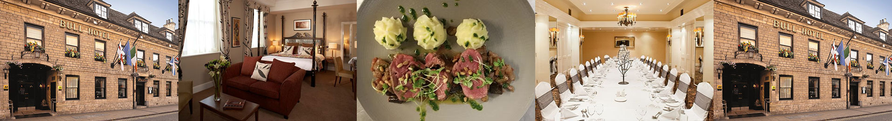

The Bull Hotel
Pamper yourself at our favourite hotel in Peterborough: a perfect location, a full range of amenities, and fine dining equals pure luxury and comfort.

Rooms: Double, Twin, Family, Four Poster Rooms, Suites
Facilities: Restaurant, Bar, Weddings, Events, Conference Rooms, Parking, Wi-Fi
Price Range:rong £££

>> Go to Argo Lounge's website
A beautifully appointed, charming hotel with a central location and a focus on comfort and hospitality.
This historic building includes 118 rooms, function rooms for all occasions, fine dining in The Brasserie, or lighter bites are available in the Pastroudis Bar and Lounge.
The four poster room is a particular treat: check out the offers for romantic breaks on their website.
Originally dating back to the 17th century, this grade two listed building has, over the years, been carefully restored and tastefully refurbished, to provide guests with a high degree of four star comfort, whilst our friendly and efficient staff offers service and hospitality which is unrivalled in the city.
-- From The Bull Hotel's Website
Social Media: